Introduction
The dataset I’m using for this project is a year of data collected on my fitness and sleep activity through my FitBit. I’ve always enjoyed looking at my FitBit stats in the app I use, but I wanted to conduct a more thorough analysis of my activity over the past year (October 2019-September 2020). Some of the important variables in this dataset are: date, day of the week, steps, floors, distance, calories burned, calories burned from activity, weight, and minutes of sleep. I generally wear my FitBit throughout the day and when I sleep, so it is almost always tracking my activity. Although my FitBit tracks heart rate, that data was unavailable. However, there are multiple variables that are based off heart rate such as minutes sedentary, light activity, vigorous activity, and calories burned from activity.
In addition to the FitBit data, I decided to incorporate Los Angeles daily weather data from the National Weather Service website. I chose to do this because weather can have a profound impact on activity-- for example on days when it's extremely hot or cold, it makes it more difficult to exercise outdoors. The same goes for the few days a year it rains in Los Angeles. Finally, I decided to add an extra variable to my dataset which indicated if I was away on a trip somewhere outside of Los Angeles. Days on which I was on a trip can be considered confounding variables, since I was not living my "average" lifestyle on these trips.
Activity is an important part of a healthy lifestyle, and the CDC recommends 150 minutes a week of moderate-intensity exercise, or 75 minutes a week or vigorous-intensity, or a an equivalent combination (1). One study found that adults average 4,000-18,000 steps a day. The study claims that a goal of 10,000 steps per day is reasonable for healthy adults (2). Recommended sleep for adults is generally between 7-9 hours per night (3), with the goal to not get too little, or too much sleep. Physical activity is beneficial not only for general health, but also for mental health. As such, it has been recommended to stay physically active during the Covid-19 pandemic, although types of exercise may have to shift from going to the gym to doing outdoor or home-based workouts. However, it has recently been found that step counts decreased worldwide in the period after COVID-19 was declared a global pandemic (4).
Ultimately, I wanted to explore my fitness, and how it interacted with external factors such as weather, the Covid-19 pandemic, and days of the week.
I would like to address the following overarching question and sub-questions for this analysis:
Main Question:
How does my personal FitBit data characterize multiple markers of health and wellbeing?
Sub-questions:
1.) How did the Covid-19 pandemic affect my health in terms of activity, sleep, and weight?
2.) How does daily weather affect my health in terms activity, sleep, and weight?
3.) What days of the week am I most active and get the most sleep?
4.) How are my activity, weight, and sleep related to each other?
Methods
I downloaded this data from the FitBit website, which has a dashboard of my data and the ability to export data. I had to download each individual month and then combine it into one excel spreadsheet. I was originally going to do this in R, however, the spreadsheets were not consistent and it made sense to first make a complete dataset and then read it into R and complete the data cleanup and wrangling. In Excel, I added ID (days 1-366), as well as day of the week (Monday, Tuesday, Wednesday).
After installing/loading appropriate libraries and reading in the dataset, I checked the summary statistics for all relevant variables. I noticed that variables with commas in the numbers (e.g steps are generally 1,000+) were read as character variables rather than integers in R. Thus, I converted these to numeric, and also changed the date variable which was a simple character class into a date class.
I then made various new categorical variables:
Activity based on calories burned in a day. This was split into 4 factors determined by quarter quantiles and resulted in the following evenly split values: very high activity (>2,471 cals), high activity (2,184-2463 cals), average activity (1,979-2,183 cals), and low activity (<1,972 cals).
Step count, which was based on my own personal interpretation/goals of steps I like to achieve in a day: very high step count (>15,000), high step count (10,000-15,000), average step count (5,000-10,000) and low step count (<5,000). I had a high step count the greatest number of days (N=158). Additionally, I changed any value below 1,000 steps to missing, since this indicates that I was not wearing my FitBit that day.
For sleep, I made 3 categories which were based on guidelines which indicate 7-9 hours of sleep is ideal. These categories were: short sleep time (<7 hours), ideal sleep time (7-9 hours), and long sleep time (>9 hours). I also noted that the lowest value of sleep was 93 minutes, or roughly 1.5 hours. Since this variable is a sum of all sleep throughout the day, it is hard to believe that I only got 1.5 hours on a given day. More likely, I wasn't wearing my fitbit during a time when I was sleeping, or it died during my sleep, so it didn't capture the full data. For this reason, I converted improbable values that lie in the lower 5% of the data, which is 289 minutes, or almost 5 hours to missing. The maximum is 754 minutes, or 12.5 hours, which is entirely possible for me, given that I know my sleeping/nap pattern.
I created a binary variable that is "Pre-Covid" and "Covid". I set "Covid" to start March 14, 2020 and has continued until the present/end of the dataset (through September). Dates before March 14th are considered pre-Covid.
For the final project, I decided to add in weather data to my dataset. I acquired this data from the National Weather Service website (https://w2.weather.gov/climate/xmacis.php?wfo=lox). I entered my location as Pasadena, CA, since that is the closest location to where I live, and I pulled data for October 2019- September 2020. I decided to use the daily minimum, daily maximum, and daily average temperature, as well as precipitation (inches), and incorporated that into my master excel sheet. Finally, I wanted to code for days on which I had been away from LA on a trip. I looked through my calendar for any indication of being away on a trip and coded that as a binary variable, in which 1= on a trip, and 0= normal Los Angeles day. This was all done in Excel for ease of data entry, and then I re-ran my existing (midterm project) code in order to update the dataframe with my new weather and trip data. I checked that each new variable was correctly entered by looking at the summary statistics and frequency of the binary trip variable.
For data exploration, summary statistics and graphs I used a mix of frequency tables (with chi sq), correlation analysis, t-tests, box plots, scatterplots, and barcharts.
Results
Please refer to my website at https://mbolshakova.github.io/PM-566-Final-Project/ for a descriptive statistics table, as well as interactive plots.
Graphs and Plots
Variables By Date
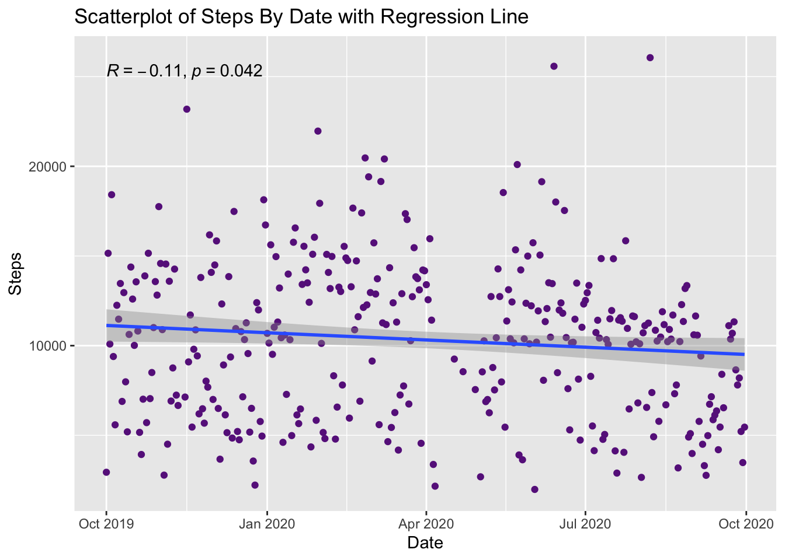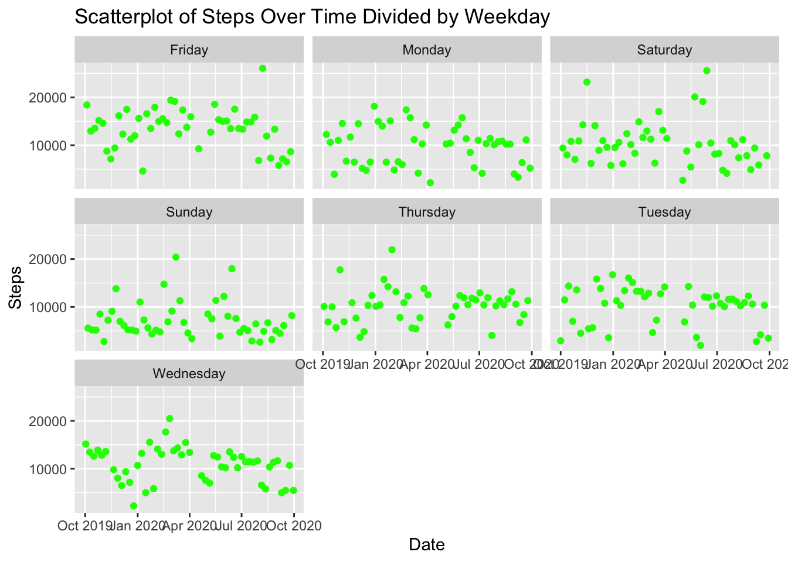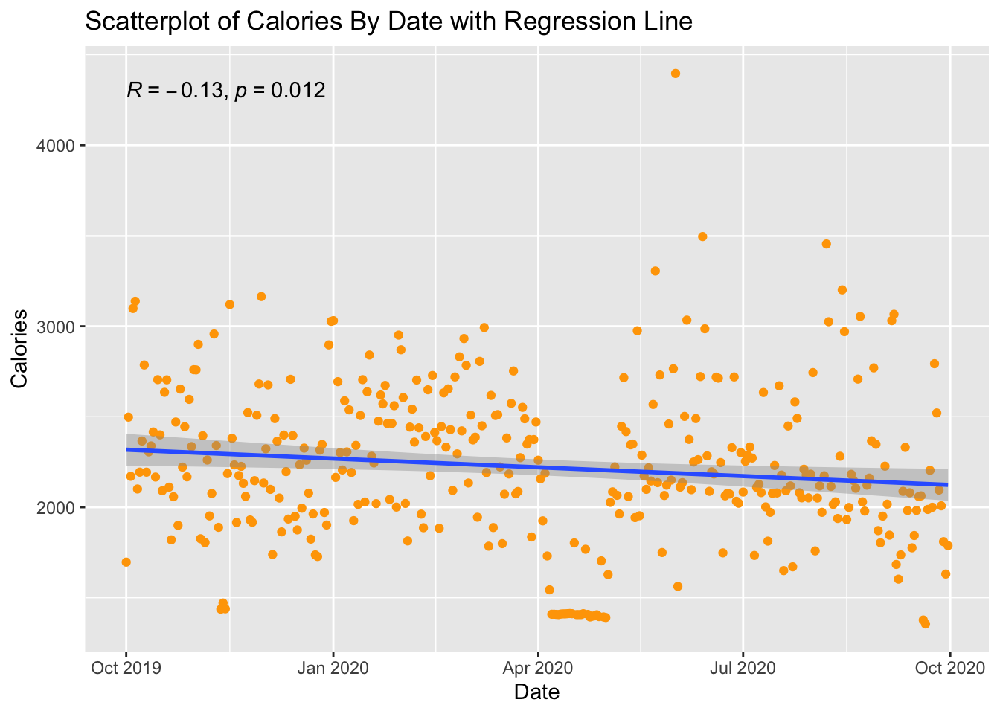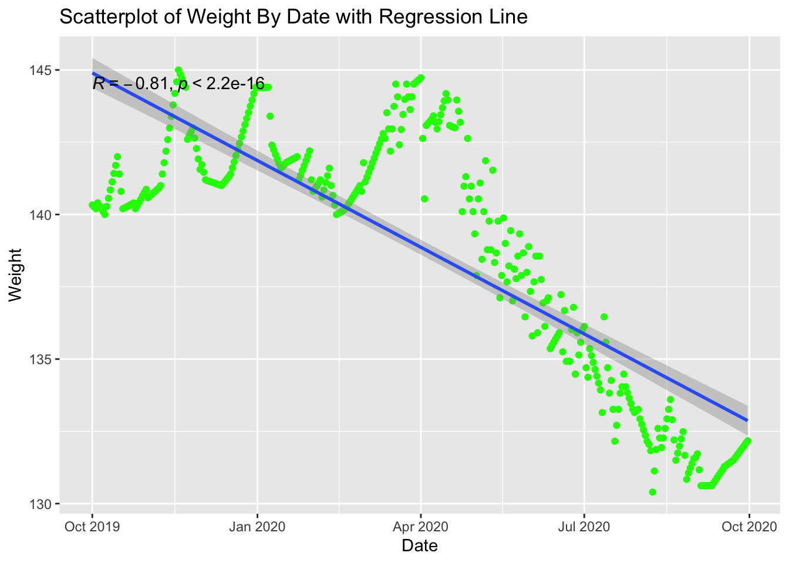
Variables by Covid
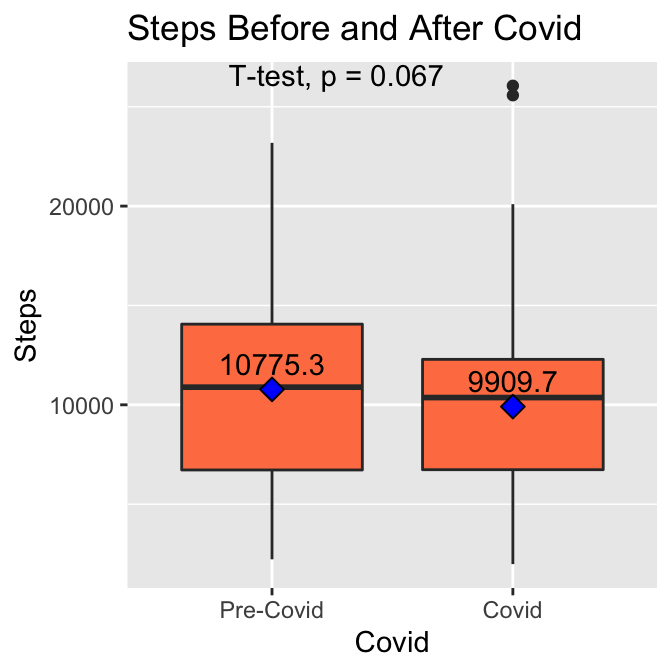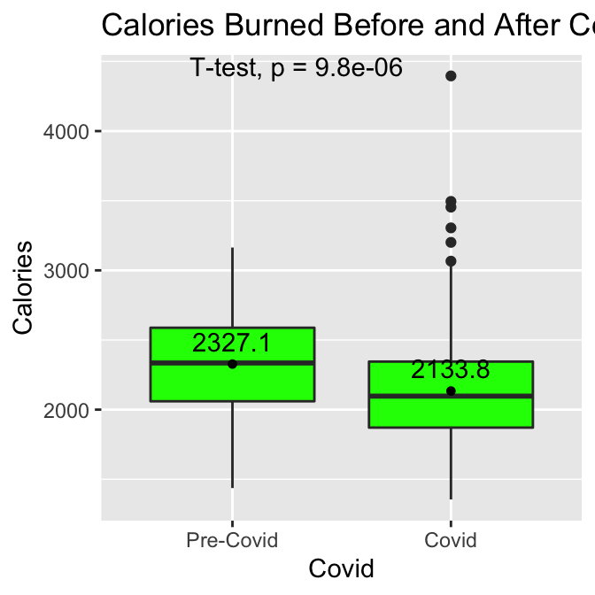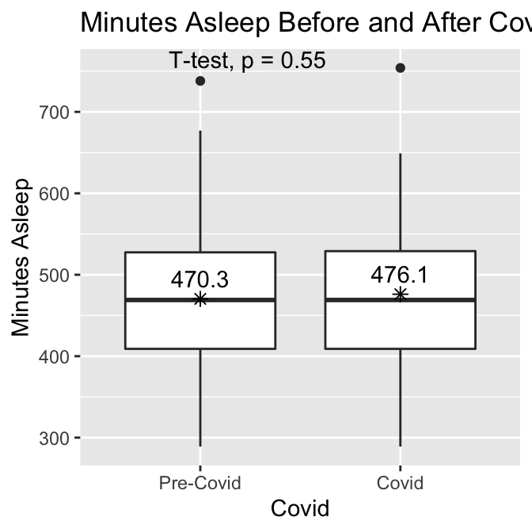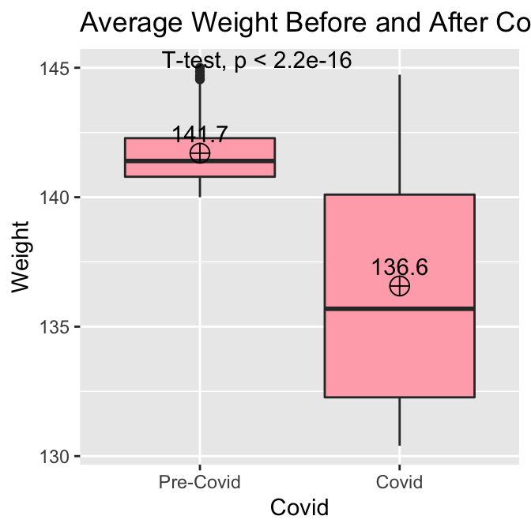
Variables by Weekday
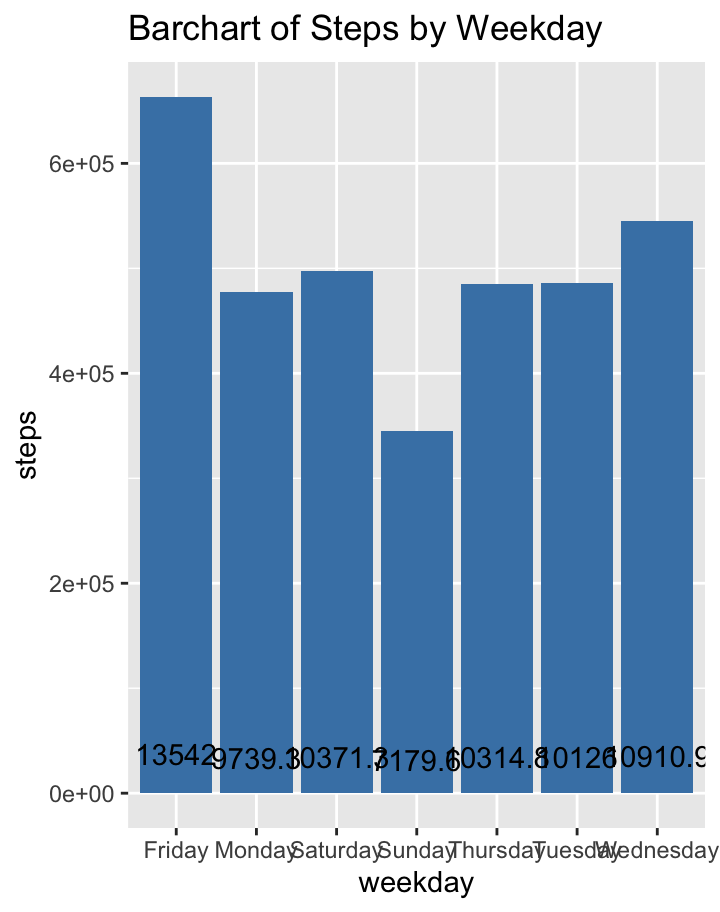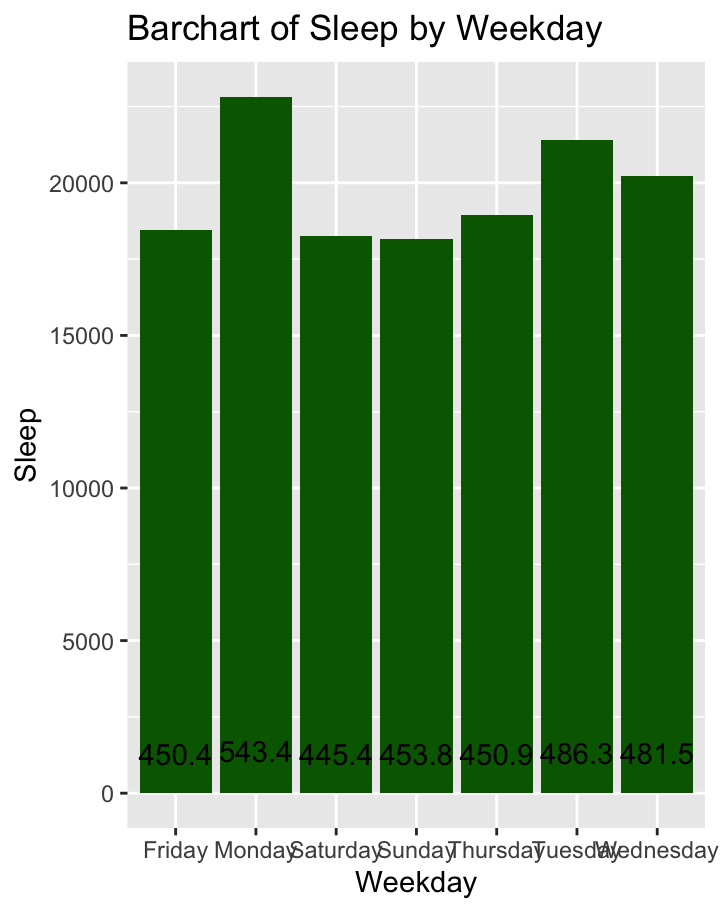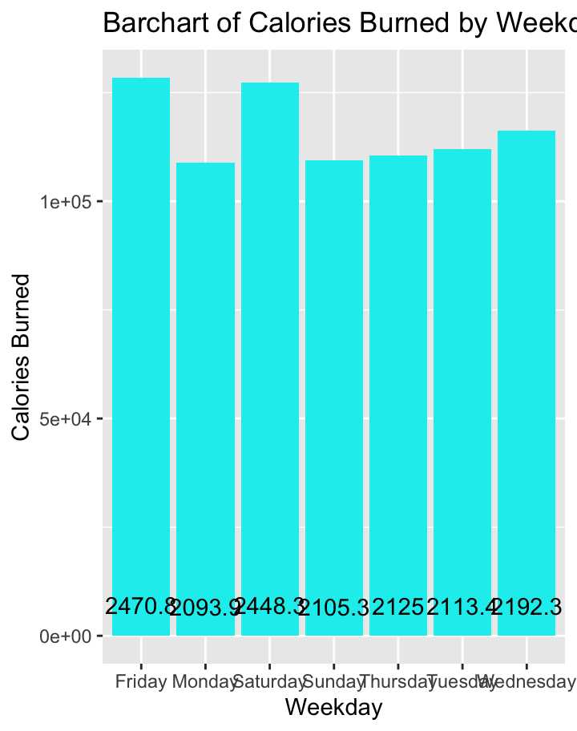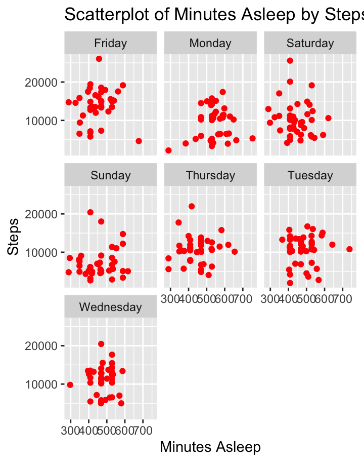
Associations between variables
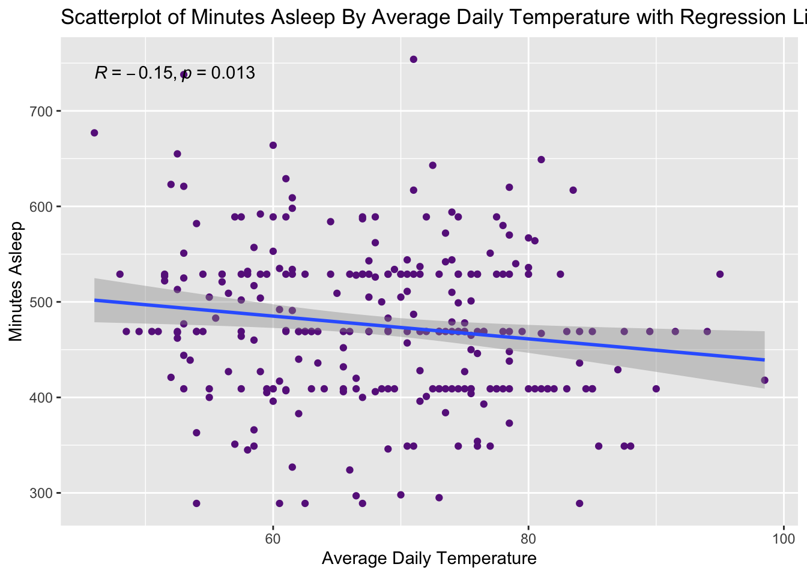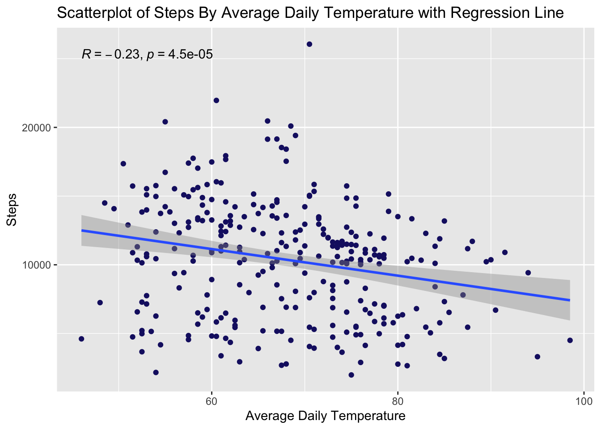
Conclusions
The data show very interesting patterns about my activity and sleep throughout the last year. For example, I have on average taken less steps during covid than before, and my calories burned have been significantly less, although my sleep has not been affected. My weight has gone down during Covid, despite less steps and less activity. I believe this is due to nutrition and eating healthier/tracking my calories and making a distinct effort to lose weight. Still, it is interesting that I used to burn many more calories but have lost significant weight with less activity. I also have switched exercises from jogging/running on the treadmill and weightlifting at the gym pre-covid, to taking walks around my neighborhood and yoga during covid, which could explain why overall I'm burning less calories (heart rate is not as increased because the during covid activities are less vigorous). Additionally, although I am still walking around my neighborhood, I am doing considerably less walking to and from school, meetings, etc., since I am mostly at my home.
The graphs show that I am most active on Fridays (using all dates), which makes sense because I usually work out the most on a Friday. I sleep most on Mondays, which also makes sense because I am usually tired from the weekend, and sleep a lot Sunday night- Monday morning, and then occasionally nap on Monday as well. I also think it is interesting that both sleep and steps ar eboth inversely correlated with daily average temperature-- that is, when it is hotter I tend to sleep less and walk less. This does make sense since outdoor exercise is not possible when it is 100+ degrees out, and the hot weather may make it harder to stay asleep.
Summary
In summary, this project helepd me to visualize my fitness, activity, and sleep patterns and I was able to analyze how those variables changed over a year, how they differed pre-and-post pandemic life, and also how they related to the weather. It would be interesting to get more data from my past and also to keep tracking my activity and use this same code in order to have a richer dataset tha spans multiple years.
References
1- CDC Physical Activity Guidelines (2020) https://www.cdc.gov/physicalactivity/basics/adults/index.htm
2- Tudor-Locke, C., Craig, C. L., Brown, W. J., Clemes, S. A., De Cocker, K., Giles-Corti, B., ... & Oppert, J. M. (2011). How many steps/day are enough? For adults. International Journal of Behavioral Nutrition and Physical Activity, 8(1), 1-17
3- Sleep Guidelines (2020) https://www.sleepfoundation.org/articles/how-much-sleep-do-we-really-need#:~:text=National%20Sleep%20Foundation%20guidelines1,to%208%20hours%20per%20night.
4- Tison, G. H., Avram, R., Kuhar, P., Abreau, S., Marcus, G. M., Pletcher, M. J., & Olgin, J. E. (2020). Worldwide effect of COVID-19 on physical activity: a descriptive study. Annals of internal medicine.